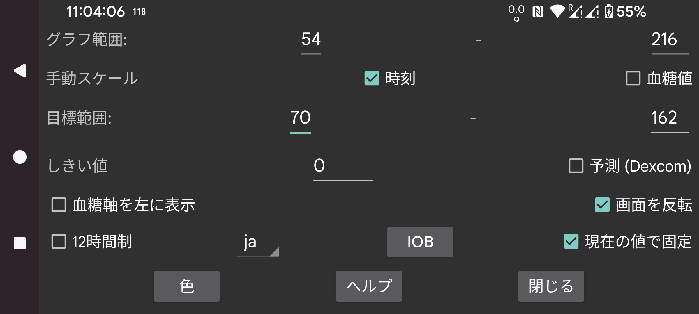

ar de es hi it ja nl ru tr uk uz en
曲線、スキャン、数値の色を変更します。ダークモード を切り替えるには、右中メニュー → ダークモードを使用します。
画面の下端が最低値、上端が最高値に対応するように低値と高値を指定します。これらの値は、画面に表示されるすべての血糖値がこれらの境界内にある場合のみ使用されます。それ以外の場合、すべての値が見えるよう境界が広げられます。3 mmol/L (54 mg/dL) と 9 mmol/L (162 mg/dL) を指定し、表示画面上のすべての値が 5 mmol/L から 6 mmol/L の間であれば、グラフは 3 から 9 までの血糖軸を表示します。
血糖値を手動でスケールがオンの場合、これを変更できます: 画面の上半分を指で動かすとグラフの上半分が上下に動き、下半分を動かすと下半分が上下に動きます。
表示の高値側は別の色になり、高値が見やすくなります。低値側も同様です。表示の低すぎる側を示すために赤い線が表示されます。
グラフの血糖値の数値を画面の左に配置します。例えば WearOS で現在の血糖値を画面中央に配置したい場合に便利です。
血糖値の変化率にしきい値を適用します。変化率が 0 から指定された量だけ離れている場合のみ、変化率の矢印が水平から異なるものになります。0 から 0.8 までの任意の値を使用できます。しきい値は、小さな絶対変化率の値に過度の意味を与えないようにするために使われます。変化率が緩やかに上昇する血糖値を示しているように見えても、実際には低下していることが十分にあり得ます。しきい値は、より慎重な判断を行うために使われます。
Dexcom センサーは実際の値とともに予測値も送信します。私はこれを Google で検索しましたが、参考資料が見つかりませんでした。Dexcom が最大 20 分先までの低血糖を予測するアラームをサポートしていることだけ見つけました。https://www.dexcom.com/g7/how-it-works#alerts 参照。
これらの値を 20 分先に配置するとあまり一致しませんでした。10 分先に配置するとはるかに良く一致しました。
このオプションをオンにすると、これらの予測値は Juggluco で Libre センサーの履歴値と同じように表示されます。右中メニュー → 履歴のチェックを外すことでオフにすることもできます。Juggluco ではアラームには使用されず、予測の精度を判断するために単に表示できます。
表示を上下逆さまにします。デフォルトでオンになっています。これは、そうしないとセンサーをスキャン中に誤って OK を押してしまうことがあるためです。
縦向きモードを求める方もいますが、血糖グラフの表示にまったく適さないため無効にしています。
IOB は、過去のインスリン投与量からどれだけのインスリンが残っているかの指標です。これを行うには、「速効型インスリン」カテゴリのラベルでインスリン用量を入力する必要があります。どのラベルが「速効型インスリン」かは、左メニュー → 設定 → データ交換 → Web サーバー → 記録を送信で指定できます。
「現在を固定」を設定すると、画面に表示される時間範囲が左にスクロールされ、現在は常に画面の同じ位置にあります。一部のユーザーは、自分から数メートル離れたコンピューター上の Android エミュレーターで Juggluco を実行しています。「現在を固定」がオフの場合、現在の血糖値の位置は時間の経過とともに右に移動し、数時間後には見えなくなります。これではコンピューターまで歩いて画面を数センチスクロールする必要があります。「現在を固定」をオンにすると、この邪魔がなくなります。
Juggluco は選択された言語で表示されます。言語コードが選択されていない場合、システム言語が使われます。